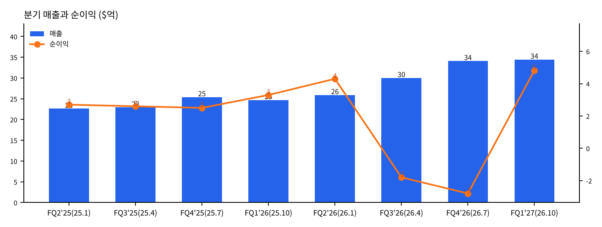
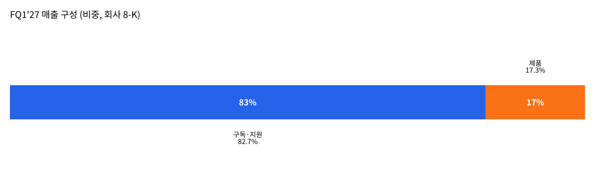
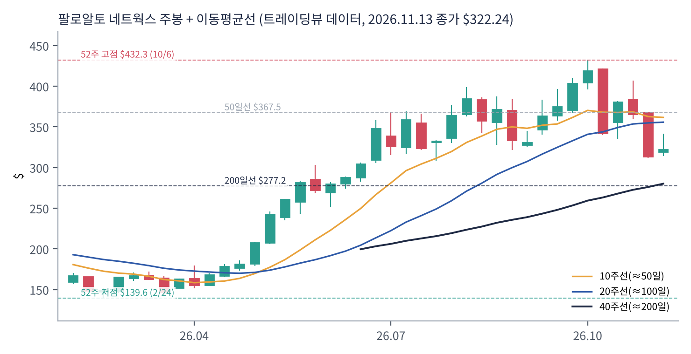

팔로알토 네트웍스는 방화벽·클라우드 보안·보안 운영·신원 보안을 하나의 플랫폼으로 파는 사이버 보안 회사다. 플랫폼화로 ARR이 빠르게 늘고 있고, 이번 분기 GAAP 이익은 세금 혜택이 만들었다(세전이익은 $0.25억).
| 항목 | 내용 |
|---|---|
| 종목 | Palo Alto Networks (PANW) · NASDAQ · 사이버 보안 · 캘리포니아 산타클라라 |
| 멀티플 | GAAP PER 557배(왜곡) · 조정 PER 86.1배 · P/S 22.4배 (11/18 종가 $339.92) |
| 최근 분기(FQ1'27, 10월 말) | 매출 $34.5억(+39%), 조정 EPS $1.05, NGS ARR $97.3억(+66%), RPO $210억 |
| 인수 | CyberArk(현 Idira)·Chronosphere 인수 완료, 2026.11.18 Applied Compute 인수 의향 발표(조건·일정 미공개) |
| 현금·부채 | 현금·단기·장기투자 약 $91.4억, 전환사채 $19.3억(모두 단기로 분류) |
| 직책 | 인물 | 역할·특징 |
|---|---|---|
| 회장·CEO | 니케시 아로라 | 플랫폼화 전략 설계자. 이번 분기를 "기록적인 Q1"이라 부르고 AI 위협 환경을 수요 배경으로 설명 |
| CFO | 디팍 골레차 | 가이던스·마진·현금흐름 설명 |
경영 스타일: '고객이 제품을 한 플랫폼으로 모으면 가격 혜택을 주고, 인수로 빈 곳을 채운다'. FY30 NGS ARR $200억 목표를 유지하고, 이번에는 오픈 웨이트 AI 모델 사후 학습·추론 플랫폼 Applied Compute 인수 의향을 밝혔다.
네트워크·클라우드 보안, XSIAM 보안 운영, Idira 신원, Chronosphere 관측을 한 곳에 묶는다.
AI가 공격 속도를 높이므로 통합 방어가 필요하다는 논리로 플랫폼 수요를 설명하고, 직접 보안 AI 모델을 공급하는 방향을 추가했다.
다음 실적발표는 세 가지 질문에 답하는 자리다.
1. NGS ARR가 FQ2 가이던스 $102.0~102.2억을 달성하나?
2. 인수 후에도 마진과 현금흐름이 유지되나?
3. 인수 통합과 신규 인수가 EPS로 이어지나?
한 줄 판정 규칙: 첫 질문(NGS ARR)이 가이던스 안이면 약한 고리(성장 근거)가 풀리고, 셋째 질문(GAAP 세전이익)이 정체하면 이익 고리가 약하다.
일정: FQ2'27(2026.11~2027.1월) 실적 발표일은 회사 확정 일정 확인 필요. 이번 발표로 FY27 가이던스는 매출 $145.2~145.7억, 조정 EPS $4.26~4.30으로 상향됐다.
| 분기 | 매출 | 순이익 | EPS | 조정 EPS | 특이 사항 |
|---|---|---|---|---|---|
| FQ2'25(25.1) | $22.6억 | $2.7억 | 0.38 | 0.81 | |
| FQ3'25(25.4) | $22.9억 | $2.6억 | 0.37 | 0.80 | |
| FQ4'25(25.7) | $25.4억 | $2.5억 | 0.36 | 0.95 | GAAP 흑자 전환 직후 |
| FQ1'26(25.10) | $24.7억 | $3.3억 | 0.47 | 0.93 | |
| FQ2'26(26.1) | $25.9억 | $4.3억 | 0.61 | 1.03 | |
| FQ3'26(26.4) | $30.0억 | $-1.8억 | -0.22 | 0.85 | |
| FQ4'26(26.7) | $34.1억 | $-2.8억 | -0.35 | 1.02 | GAAP 순손실(인수 관련 비용 영향 추정) |
| FQ1'27(26.10) | $34.5억 | $4.8억 | 0.57 | 1.05 | GAAP 세전이익 $0.25억, 세금 혜택 $4.57억으로 순이익 흑자 |
매출·순이익·EPS·조정 EPS 값은 기존 보고서의 트레이딩뷰 이력이고, FQ1'27 값은 회사 8-K다(비GAAP EPS $1.05). FQ4'26 GAAP 순손실 원인은 인수 관련 비용으로 추정되나 공시로 확인하지 못했다(확인 필요). 분기 설비투자는 FQ1'27 $0.87억만 확인했다.

흐름 요약: 매출은 FQ2'25 $22.6억에서 FQ1'27 $34.5억으로 늘었고 FQ1'27은 전년 같은 분기 $24.7억의 1.4배다. 인수 이후 GAAP EPS는 적자(-0.22, -0.35)였다가 이번에 $0.57로 돌아왔지만 세금 혜택 $4.57억이 큰 몫이다. 조정 EPS는 $0.85~1.05 범위다.
| 매출원 | 돈을 버는 방식 | FQ1'27 매출 | 전년 대비 |
|---|---|---|---|
| 구독·지원 | ARR 기반 구독, 지원 서비스 | $28.5억 | +40% |
| 제품 | 하드웨어·소프트웨어 라이선스 | $6.0억 | +37% |

구독·지원이 매출의 83%다. NGS ARR $97.3억(+66%)과 RPO $210억(+35%)이 앞으로 매출의 기반이다. 제품별(네트워크·Cortex·Idira) 비중 표는 이번 작업에서 확인하지 못했다.
팔로알토는 '고객의 보안 도구를 하나의 플랫폼으로 통합해 ARR을 키우는 것'을 목표로 한다.
| 축 | 내용 |
|---|---|
| ARR | NGS ARR $97.3억(+66%), FY30 목표 $200억 |
| 인수 | CyberArk(Idira)·Chronosphere 완료, Applied Compute 인수 의향 |
| 현금 | 조정 FCF 마진 FY28 40% 목표(FY27 가이던스 38%) |

| 이동평균 | 값 | 종가 대비 | 위치 |
|---|---|---|---|
| 5일선 | $322.04 | +5.6% | 종가 위 |
| 20일선 | $347.45 | -2.2% | 종가 아래 |
| 50일선 | $366.70 | -7.3% | 종가 아래 |
| 100일선 | $358.36 | -5.1% | 종가 아래 |
| 200일선 | $279.47 | +21.6% | 종가 위 |
52주 저가 $139.57(2026.2.24)에서 52주 고가 $432.33(10/6)까지 올랐다가 종가 $339.92로 내려왔다. 5일선($322.04)은 웃돌지만 20일선($347.45)·50일선($366.70)·100일선($358.36)은 밑돌고, 200일선($279.47)은 웃돈다. 11/18 종가는 실적 발표(장 마감 후) 전 값이다.
| 규칙 | 기준 | 현재 값 | 신호 |
|---|---|---|---|
| 장기 추세 필터 | 종가 vs 200일선 | $339.92 > $279.47 | 매수 |
| 중장기 교차 | 50일선 vs 200일선 | $366.70 > $279.47 | 매수 |
| 단기 교차 | 20일선 vs 50일선 | $347.45 < $366.70 | 매도 |
| 돈키언 채널 | 55일 고가 $432.33 / 저가 $301.28 | 중간값 $366.80 아래 | 매도 |
| 1개월 모멘텀 | 21거래일 수익률 | -0.1% (기준 $340.28) | 매도 |
| 3개월 모멘텀 | 63거래일 수익률 | -2.8% (기준 $349.56) | 매도 |
| 6개월 모멘텀 | 126거래일 수익률 | +37.8% (기준 $246.66) | 매수 |
| 12개월 모멘텀 | 252거래일 수익률 | +67.5% (기준 $202.90) | 매수 |
| 종합 (8개 평균) | +0.00 | 중립 |
해석: 매수 신호 4개(장기 추세 필터, 중장기 교차, 6개월 모멘텀, 12개월 모멘텀), 매도 신호 4개(단기 교차, 돈키언 채널, 1개월 모멘텀, 3개월 모멘텀). 매수 4, 매도 4로 방향이 갈린다. 14일 ATR $20.18 (5.9%), 52주 고가 $432.33 · 저가 $139.57.
| 가격 | 기준 | 무엇이 바뀌나 |
|---|---|---|
| $432.33 | 55일 고가 | 돌파 시 채널 상단 갱신 |
| $366.80 | 돈키언 중간값 | 55일 채널 중간값 위/아래로 신호가 바뀜 |
| $349.56 | 3개월 모멘텀 기준가 | 종가가 이 가격 위면 3개월 신호 매수 |
| $340.28 | 1개월 모멘텀 기준가 | 종가가 이 가격 위면 1개월 신호 매수 |
| $301.28 | 55일 저가 | 이탈 시 채널 하단 갱신 |
| $279.47 | 200일선 | 종가가 이 선 위/아래인지로 장기 추세 신호가 바뀜 |
| $246.66 | 6개월 모멘텀 기준가 | 종가가 이 가격 위면 6개월 신호 매수 |
| $202.90 | 12개월 모멘텀 기준가 | 종가가 이 가격 위면 12개월 신호 매수 |
가격 수준은 신호가 바뀌는 기준선일 뿐 진입·청산 가격 제안이 아니다. 20일/50일 교차는 이동평균 자체가 움직여 단일 가격으로 표시하지 않았다. 일봉·주봉은 종가 기준 직접 계산(고저 데이터 미사용)이다.
| 악재 요인 | 내용 | 강도 |
|---|---|---|
| 밸류에이션 | GAAP PER 557배(왜곡), 조정 PER 86.1배, 조정 PEG 약 6.5 | 높음 |
| GAAP 이익 질 | GAAP 세전이익 $0.25억, 순이익은 세금 혜택 $4.57억 덕분. 희석 주식 +18%(8.38억 주 vs 7.09억 주) | 중간 |
| 인수 통합 | CyberArk·Chronosphere 통합에 Applied Compute 인수 추가, 조건 미공개 | 중간 |
| FY27 성장 둔화 가이던스 | FY27 NGS ARR +26~27%로 이번 분기 +66%보다 낮은 성장 가이던스(기저 효과 포함, 내 해석) | 참고 |
| 경쟁 | SASE 전환 경쟁 | 중간 |
| 티커 | 회사 | PER(TTM) | PEG | P/S | EPS 성장(YoY) |
|---|---|---|---|---|---|
| PANW | 팔로알토 | 86.1배* | 6.5* | 22.4배 | +13.2%* |
| CRWD | 크라우드스트라이크 | 6,347.6배 | – | 44.49배 | – |
| FTNT | 포티넷 | 41.4배 | 1.59 | 12.21배 | +26% |
| ZS | 지스케일러 | 적자 | – | 9.33배 | -47% |
| CHKP | 체크포인트 | 17.7배 | – | 5.45배 | -9% |
| OKTA | 옥타 | 110.5배 | 1.16 | 10.62배 | +95% |
비교 결론: 팔로알토 조정 PER 86.1배는 포티넷(41.4배)·체크포인트(17.7배)보다 높고 옥타(110.5배)보다 낮다. * PANW 행은 조정 EPS 기준 내 계산(GAAP PER 557배, PEG 산출 불가)이다. 동종 값은 11/13 트레이딩뷰 값으로 이번에 갱신하지 못했다.
팔로알토는 현금·투자 약 $91.4억이 전환사채 $19.3억보다 크다. 이번 분기 영업현금흐름은 $19.3억으로 이익보다 훨씬 크다.
| 지표 | 값 | 계산·출처 | 해석 |
|---|---|---|---|
| 현금·단기·장기투자 | 약 $91.4억 | 현금 $25.9억 + 단기 $4.6억 + 장기 $60.8억(내 계산) | 7월 말 약 $79.1억에서 증가 |
| 전환사채 | $19.3억 | 8-K, 모두 단기로 분류 | 순현금 약 $72.1억(내 계산) |
| FQ1 영업현금흐름 · 설비투자 | $19.3억 · $0.87억 | 8-K | 잉여현금 $18.4억(전년 $16.9억) |
| 조정 FCF 마진 | 56.2% | 8-K(전년 69.2%) | FY27 가이던스 38.0% |
| TTM 잉여현금(내 계산) | 약 $42.7억 | 직전 TTM $41.1억 + (FQ1'27 $18.4억 − FQ1'26 $16.9억) | TTM 매출 대비 약 34% |
| 기준 | 매출 | P/S | 비고 |
|---|---|---|---|
| 내 계산(11/18 종가 기준 ÷ 최근 4분기 매출) | $124.5억 | 22.4배 | FQ2'26~FQ1'27 합계 |
| 동종(11/13 트레이딩뷰) | – | 5.5~44.5배 | CRWD 44.5, FTNT 12.2, OKTA 10.6, ZS 9.3, CHKP 5.5 |
해석: 팔로알토 P/S 22.4배는 보안 동종(FTNT 12배, ZS 9배)보다 높고 CRWD(44배)보다 낮다. 매출이 인수로 커진 상태라 P/S만으로 싸고 비싼 것을 가르기 어렵다.
이번 작업에서는 EBITDA 수치를 갱신하지 못해 영업이익으로 대신 본다.
| 지표 | 값 | 산출 |
|---|---|---|
| FQ1'27 비GAAP 영업이익 | $10.6억 (30.7%) | 전년 $7.5억(30.2%) |
| FQ1'27 GAAP 영업이익 | $0.96억 (2.8%) | 전년 $3.1억(12.5%) |
| GAAP 세전이익 | $0.25억 | 전년 $4.12억, 세금 혜택 $4.57억 반영 |
| PER (조정 TTM) | 86.1배 | $339.92 ÷ 조정 EPS $3.95 |
| GAAP PER (TTM) | 557배 | $339.92 ÷ $0.61 (왜곡) |
| 방식 | PER | EPS 성장률 | PEG | 판정 |
|---|---|---|---|---|
| 조정 EPS (TTM $3.95, 내 계산) | 86.1배 | +13.2% ($3.49 → $3.95) | 6.5 | 기준 초과 |
| FY27 가이던스 조정 EPS 중간값 $4.28 (가정·추정) | 79.4배 | +11.7% (FY26 $3.83 → $4.28) | 6.8 | 기준 초과 |
| GAAP (TTM $0.61) | 557배 | -61% ($1.58 → $0.61) | 산출 불가 | GAAP 감소 |
판정: 조정 EPS 기준 PEG 약 6.5로 1.0 초과, GAAP은 산출 불가. GAAP EPS는 인수 비용과 세금 혜택이 번갈아 낀 값이라 PEG 판단에 쓰기 어렵다. 조정 EPS 기준으로도 ARR 성장(+66%)이 EPS에 충분히 반영되지 않았다. FY27 가이던스 EPS 중간값 $4.28 기준 성장은 약 12%(내 계산)다.

팔로알토의 사이클은 플랫폼화 고객 → 구독·ARR → 이익·현금 → 인수·R&D 재투자 → 교차 판매다. 번 현금으로 인수와 R&D에 다시 쓰고, 넓어진 제품군으로 같은 고객에게 더 판다.
| 고리 | 현재 숫자 | 고리 강도 | 약해지는 신호 |
|---|---|---|---|
| ① 플랫폼화 고객 | 플랫폼화 순증(직전 분기 약 220곳, 이번 분기 수치 미확인) | 강함 | 순증 속도 둔화 |
| ② 구독·ARR | NGS ARR $97.3억(+66%), RPO $210억 | 강함 | ARR 증가율이 가이던스 하회 |
| ③ 이익·현금 | FQ1 잉여현금 $18.4억, 조정 FCF 마진 56.2% | 강함 | FY27 가이던스 38%로 하향 |
| ④ 인수·R&D 재투자 | Idira·Chronosphere, Applied Compute 인수 의향 | 보통 | GAAP 세전이익 정체 |
| ⑤ 교차 판매 | 플랫폼화 NRR(직전 분기 120% 초과, 이번 분기 미확인) | 보통 | SASE 경쟁·가격 압박 |
사이클의 특징: ①②③은 강하지만 ④에서 GAAP 세전이익이 거의 없어 주가 판단의 근거가 조정 EPS에 쏠린다. 인수 효과가 EPS로 확인되지 않으면 이 고리의 신뢰도가 낮아진다.